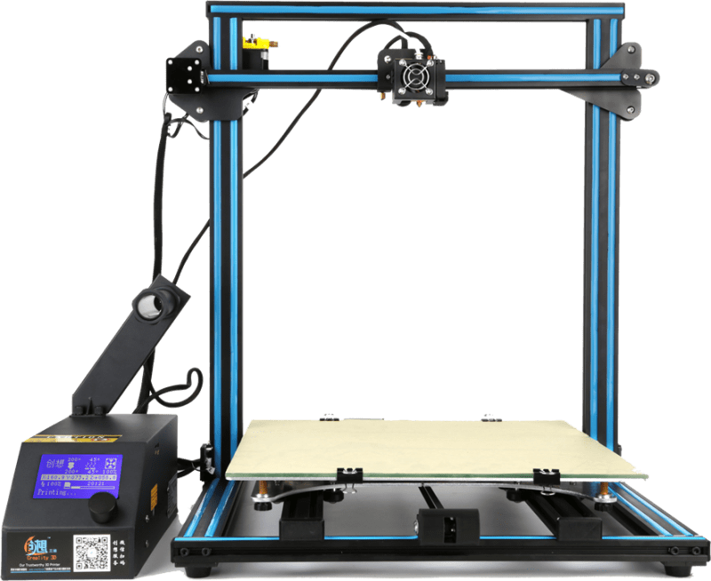
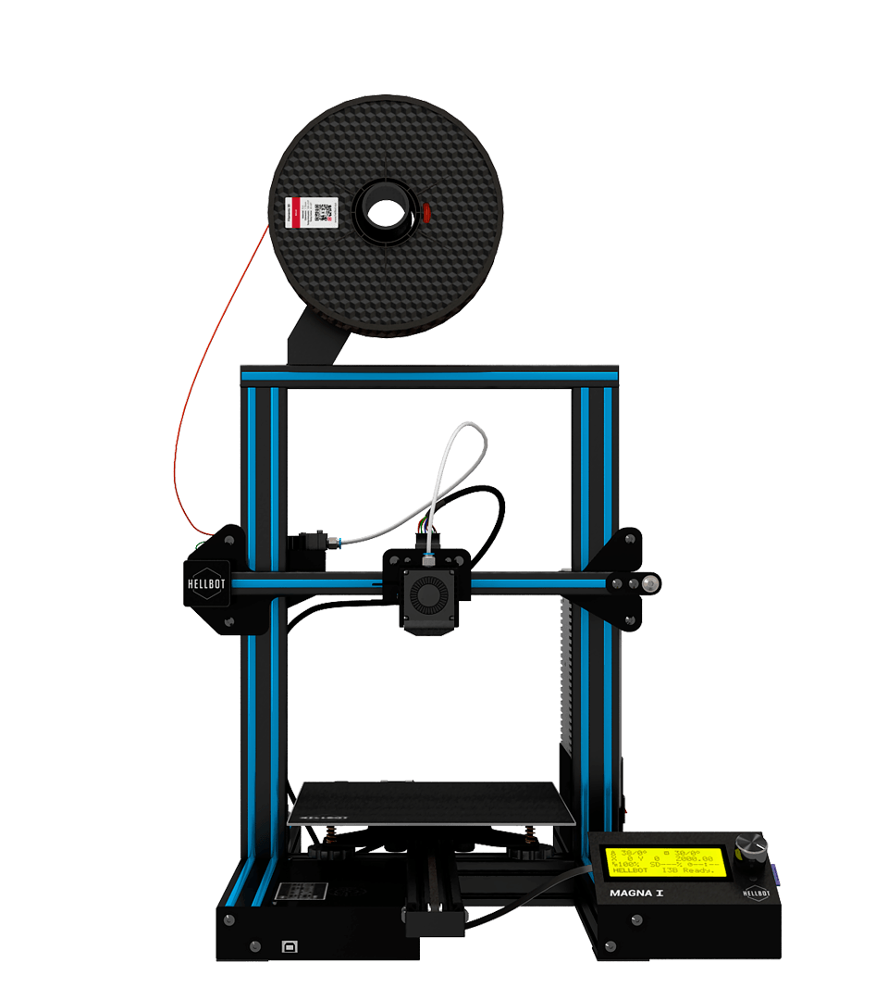

GoPrint3d
Aqui encontraras nuestras impresoras y el tipo de impresoras del mercado
| Nuestras maquinas y sus caracteristicas |
Eje x | Eje z | Eje y | Foto |
|---|---|---|---|---|
| Creality Cr-10 | 300
mm |
300
mm |
30
mm |
 |
| Hellbot Magna 1 | 260
mm |
220
mm |
220
mm |
 |
"Tipos de impresoras 3D en función de la tecnología de impresión 3D que emplean"
Para aquellos que se hayan unido hace relativamente poco tiempo al mundo de las
impresión 3D, hoy vamos a
explicar, a grandes rasgos, qué tipos de impresoras 3D hay y qué diferencias existen entre ellas.
Para distinguir diferentes gamas o tipos de impresoras 3D, lo hacemos principalmente en función a la
tecnología que usan para llevar a cabo la impresión.
Teniendo en cuenta esto, podemos distinguir estos tipos de impresoras 3D:
Impresoras 3D por Estereolitografía (SLA)
Esta técnica fue la primera en utilizarse. Consiste en la aplicación de un haz de luz ultravioleta a una resina líquida (contenida en un cubo) sensible a la luz. La luz UV va solidificando la resina capa por capa. La base que soporta la estructura se desplaza hacia abajo para que la luz vuelva a ejercer su acción sobre el nuevo baño, así hasta que el objeto alcance la forma deseada. Con este método se consiguen piezas de altísima calidad, aunque, por sacar un inconveniente, se desperdicia cierta cantidad de material en función del soporte que sea necesario fabricar. Algunos ejemplos de impresoras 3D que funcionan por estereolitografía son: Projet 1500, 1200 ó 3510 de 3D Systems.

Impresoras 3D por Inyección
Este es el sistema de impresión 3D más parecido a una impresora habitual (de tinta en folio), pero en lugar de inyectar gotas de tinta en el papel, inyectan capas de fotopolímero líquido que se pueden curar en la bandeja de construcción. Como ejemplo de impresoras 3D por inyección destacamos X60 de 3D Systems o la Zprint 450.

Impresión por deposición de material fundido
La técnica aditiva del modelado por deposición fundida es una tecnología que consiste en depositar polímero fundido sobre una base plana, capa a capa. El material, que inicialmente se encuentra en estado sólido almacenado en rollos, se funde y es expulsado por la boquilla en minúsculos hilos que se van solidificando conforme van tomando la forma de cada capa. Se trata de la típica bobina de filamento pla, abs, etc. Se trata de la técnica más común en cuanto a impresoras 3D de escritorio y usuarios domésticos se refiere. Aunque los resultados pueden ser muy buenos, no suelen ser comparables con los que ofrecen las impresoras 3D por SLA, por ejemplo. La ventaja principal es que esta tecnología ha permitido poner la impresión 3D al alcance de cualquier persona con impresoras como la CubeX, Prusa o cualquier impresora de RepRap. Actualmente se utilizan una gran variedad de materiales, entre los que predominan ABS y PLA.